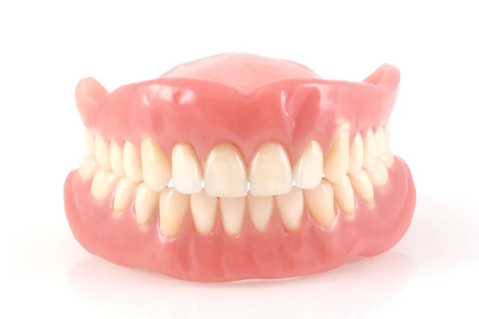
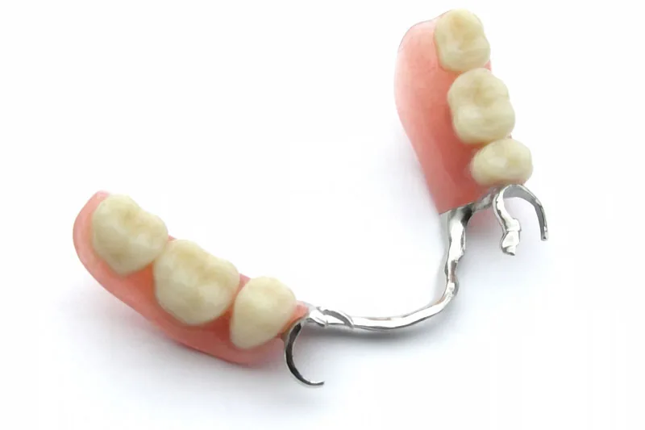
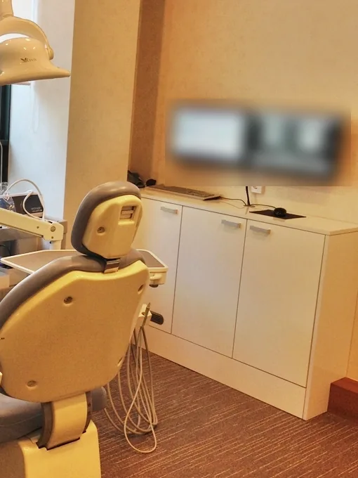
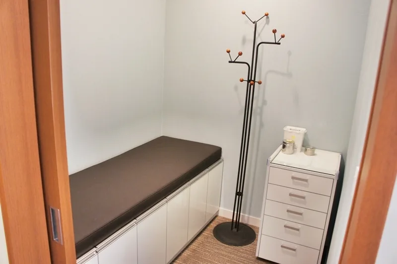
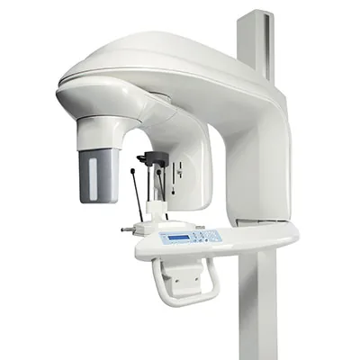
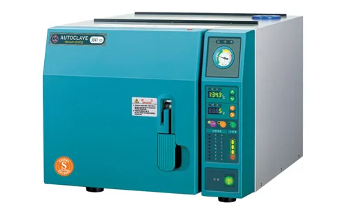

임플란트

임플란트는 치아가 빠진 자리에 인공치근을 심고 그 위에 인공치아를 연결하는 치료입니다. 안중사과나무치과에서는 CT 촬영부터 수술, 회복까지 2층에서 하고, 치료 계획에는 환자의 의견을
한눈에 보기
- 진료 층
- 2층
(임플란트 · 심미보철 · 치주) - 수술·회복
- 수술실 두 곳과 CT실, 회복실(모두 2층)
- 치료 단계
- 4단계 — 수술 전 검사 → 임플란트 식립 → 기둥 연결 → 보철물 장착
- 함께 하는 치료
- 뼈이식 · 상악동 뼈이식 · 임플란트 틀니 · 재수술
- 임플란트 제품
- 오스템 · 덴티움 · 디오 · 짐머 바이오메트확인 중
- 비용
- 진찰 후 항목별로 미리 안내합니다


임플란트란
임플란트는 치아가 빠진 자리에 치아 뿌리 모양의 인공치근(픽스처)을 심고, 그 위에 인공치아를 연결해 씹는 기능을 대신하는 치료입니다.
인공치근은 티타늄이 주성분입니다. 순수 티타늄을 많이 쓰고, 일부 제품은 Ti-6Al-4V 같은 합금을 씁니다. 회사마다 쓰는 조합이 다릅니다.
임플란트도 자연치아처럼 사람과 조건에 따라 쓰는 기간이 다릅니다. 전신 건강과 저항력, 입안 위생, 정기 검사와 유지관리에 따라 차이가 납니다.
- 1인공치아(크라운)
- 2기둥(지대주)
- 3인공치근(픽스처)
- 4잇몸뼈
이런 경우 상담이 필요합니다
치아가 빠진 채로 지내는 경우
- 치아가 빠져 씹기 불편하거나 보기 신경 쓰이는 분
- 브릿지처럼 옆 치아를 깎는 치료가 꺼려지는 분
틀니가 불편한 경우
- 완전 틀니가 자주 빠져 불편한 분
- 부분 틀니를 끼고 빼는 일이 번거로운 분


치료는 네 단계로 진행합니다
각 단계의 기간은 뼈 상태와 뼈이식 여부에 따라 사람마다 다르며, 진찰 후 안내합니다.
수술 전 검사
입안 상태를 살피고 방사선 촬영 등으로 임플란트를 심기에 알맞은지 자세히 검사합니다.
임플란트 식립
1차 수술로 정해 둔 위치의 뼈 속에 임플란트를 심습니다. 잇몸이식이나 뼈이식이 필요하면 함께 하기도 합니다.
기둥 연결
뼈가 아물고 임플란트가 뼈와 붙으면, 2차 수술로 잇몸 밖에 기둥(지대주)을 연결합니다.
보철물 장착
기둥 위에 인공치아를 만들어 끼웁니다.


촬영부터 회복까지 한 층에서
CT를 찍은 뒤 층을 옮기지 않고 수술실로 가고, 수술이 끝나면 같은 층 회복실에서 쉬었다 가십니다.
이 층에진료실 · 상담실 · 수술실 두 곳 · CT실 · 회복실
뼈이식 · 임플란트 틀니 · 재수술
뼈이식
잇몸뼈의 양이 부족하면 본인의 뼈나 인공뼈를 이식해 임플란트를 심을 만큼 뼈를 만듭니다. 임플란트 식립과 같은 날 하기도 합니다.
- 진단
- 뼈이식
- 뼈 형성 확인
- 식립
- 브릿지나 틀니를 오래 써서 잇몸뼈가 줄었거나, 타고난 뼈가 약한 경우
- 치아를 뽑고 오래 두어 잇몸뼈가 흡수된 경우
- 윗어금니 자리에 뼈가 모자라 상악동을 올리고 그 공간에 뼈를 만드는 경우(상악동 뼈이식)
- 잇몸 염증으로 뼈가 녹아 치아가 흔들린 경우 — 염증 치료 뒤 뼈이식
임플란트 틀니
임플란트 몇 개를 심고 연결장치로 틀니를 고정하는 방법입니다. 모든 치아를 임플란트로 하기 부담스러울 때, 잇몸만으로 버티는 틀니의 불편을 줄이려고 씁니다. 끼웠다 빼는 방식과 고정하는 방식이 있으며, 몇 개를 어디에 심을지는 뼈 상태를 보고 정합니다.
설명을 위한 그림이며 실제 모양은 사람마다 다릅니다.
재수술
예전에 심은 임플란트에 문제가 있으면 기존 임플란트를 빼고 새로 심은 뒤 잇몸 모양을 다시 잡습니다.
- 수술 뒤 초기에 임플란트가 흔들리는 경우
- 관리가 어려워 임플란트 주변에 세균이 늘고 잇몸뼈가 녹은 경우
- 보기에 만족스럽지 않은 경우

임플란트 진료에 쓰는 장비

진단치과용 3D CT3D Dental CT입안과 턱뼈를 3차원으로 봅니다 
진료KaVo 키레이저KaVo임플란트, 잇몸 치료, 스케일링 등에 쓰는 레이저입니다 
멸균고압증기 멸균기진공 건조 방식 소형 멸균기포화 증기로 기구를 멸균합니다 
멸균핸드피스 멸균기110도 4분 살균 · 136도 25분 멸균치과용 회전 기구 (핸드피스)를 안쪽까지 멸균합니다
쓰는 임플란트확인 중
- 오스템
- 덴티움
- 디오
- 짐머 바이오메트
자주 묻는 질문
임플란트는 어떤 순서로 진행하나요?
수술 전 검사, 임플란트 식립, 기둥(지대주) 연결, 보철물 장착의 네 단계로 진행합니다. 잇몸뼈가 부족하면 뼈이식을 함께 하기도 하며, 각 단계의 기간은 진찰 후 안내합니다.
임플란트는 얼마나 쓸 수 있나요?
자연치아처럼 사람과 조건에 따라 다릅니다. 전신 건강과 저항력, 입안 위생, 정기 검사와 유지관리에 따라 차이가 나므로, 심은 뒤에도 정기 검사를 받으시는 것이 좋습니다.
잇몸뼈가 부족해도 임플란트를 할 수 있나요?
뼈의 양이 부족하면 본인의 뼈나 인공뼈를 이식해 뼈를 만든 뒤 심거나, 심는 날 뼈이식을 함께 하기도 합니다. 가능 여부와 방법은 검사 후 안내합니다.
임플란트 틀니는 일반 틀니와 무엇이 다른가요?
일반 틀니는 잇몸이 받치고, 임플란트 틀니는 심어 둔 임플란트에 연결장치로 고정합니다. 끼웠다 빼는 방식과 고정하는 방식이 있고, 임플란트 개수와 자리는 뼈 상태를 보고 정합니다.
예전에 한 임플란트가 흔들리면 다시 할 수 있나요?
수술 뒤 초기에 흔들리거나, 주변 잇몸뼈가 녹았거나, 보기에 만족스럽지 않으면 기존 임플란트를 빼고 다시 심는 재수술을 검토합니다. 진찰과 촬영 뒤 안내합니다.
비용은 어떻게 안내받나요?
치아 상태와 뼈이식 여부에 따라 달라 진찰 후 항목별로 미리 안내합니다. 의료법에 따른 비급여 진료비 안내는 홈페이지 아래쪽 '비급여 진료비'에서 볼 수 있습니다.
진료시간 · 오시는 길
031-683-7575경기도 평택시 안중읍 안중로 132
- 성심주차장을 이용하시면 주차권에 병원 도장을 찍어 드려 무료로 주차할 수 있습니다
(이면도로 주차는 유료). - 본원 뒤 주차장은 자리가 좁습니다. 이용하실 때는 주차권을 받아 가셔야 나가실 수 있습니다.
진료시간
- 월
- 전체
- 오전 9시 ~ 오후 6시교정과 오전 10시 ~ 오후 6시
- 화
- 전체
- 오전 9시 ~ 오후 8시
- 수
- 3층
- 오전 9시 ~ 오후 6시
- 목
- 2층
- 오전 9시 ~ 오후 8시
- 금
- 전체
- 오전 9시 ~ 오후 8시2층 오전 9시 ~ 오후 6시교정과 오후 2시 ~ 8시
- 토
- 전체
- 오전 9시 ~ 오후 2시점심시간 없음
- 점심
- 평일
- 오후 1시 ~ 2시
- 휴진
- 일요일 · 공휴일 휴진
임플란트는 2층 진료입니다.